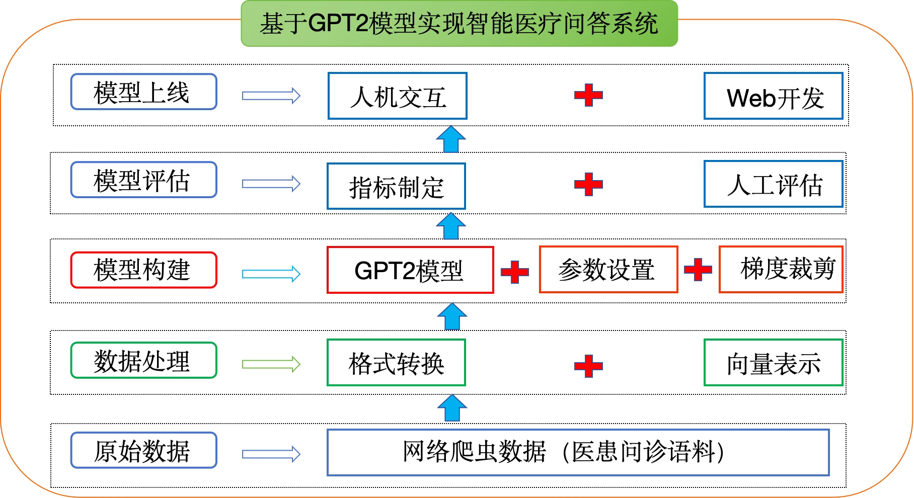
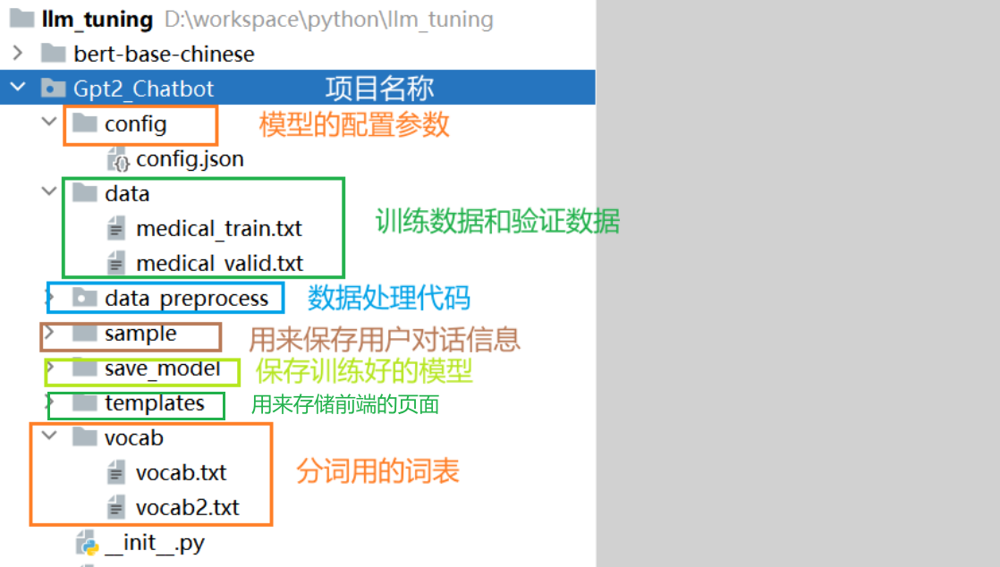

首页 / 医疗问诊机器人：GPT2 从零训练对话模型 / 第 1 章
🧭 项目背景与医疗对话数据处理
🧭
工程实践提示：示例中的模型地址、数据库账号和密钥均应通过环境变量或独立配置文件注入；部署前还需补充权限控制、输入校验、超时重试、日志脱敏、来源引用与离线评估。
学习目标
- 理解医疗问诊机器人的开发背景.
- 了解企业中聊天机器人的应用场景
- 掌握基于GPT2模型搭建医疗问诊机器人的实现过程
1. 项目介绍
1.1 项目背景
-
聊天机器人是一种基于自然语言处理技术的智能对话系统，能够模拟人类的自然语言交流，与用户进行对话和互动。聊天机器人能够理解用户的问题或指令，并给出相应的回答或建议。其目标是提供友好、智能、自然的对话体验.
-
当前，聊天机器人在多个领域得到广泛应用。首先，它们常用于在线客服系统，能够快速、准确地回答用户的常见问题，解决疑问。其次，聊天机器人可以作为个人助手，提供个性化的推荐、建议和日程安排等服务，提升用户体验。此外，聊天机器人还被应用于社交娱乐、语言学习、旅游指南等领域，为用户提供有趣、便捷的对话体验.
- 常见的相关聊天机器人产品：
微软小冰：微软公司开发。它具备自然语言处理、情感分析和对话生成等功能，能够与用户进行智能对话，提供情感支持和娱乐等服务。
阿里云小蜜：阿里云公司推出，提供了丰富的智能对话服务。它具备自然语言处理和对话管理能力，支持多领域的应用场景，如在线客服、智能助手和虚拟导购等。
百度智能云小度：百度智能云开发，提供了多领域的智能对话能力。小度机器人可应用于家庭助理、智能音箱和移动应用等场景，通过语音和文本交互与用户进行智能对话，提供信息查询、音乐播放和日程安排等功能。
本项目**基于医疗领域数据构建了智能医疗问答系统**，目的是为为用户提供准确、高效、优质的医疗问答服务。
1.2 环境准备
- python==3.10
- transformers==4.40.2
- torch==2.5.1+cu121
1.3 项目整体结构

整体代码结构：

2. 数据处理
2.1 数据介绍
- 数据存放位置：llm_tuning/Gpt2_Chatbot/data
- data文件夹中存有原始训练语料为train.txt。train.txt的格式如下，每段闲聊之间间隔一行，格式如下：
Text
帕金森叠加综合征的辅助治疗有些什么？ 综合治疗；康复训练；生活护理指导；低频重复经颅磁刺激治疗 卵巢癌肉瘤的影像学检查有些什么？ 超声漏诊；声像图；MR检查；肿物超声；术前超声；CT检查
2.2 数据处理
- 目的：将中文文本数据处理成模型能够识别的张量形式，并将上述文本进行张量的转换
- 实现过程：
- 运行preprocess.py，对data/train.txt对话语料进行tokenize，然后进行序列化保存到data/train.pkl。train.pkl中序列化的对象的类型为List[List],记录对话列表中,每个对话包含的token。
2.2.1 配置文件
- 代码路径：llm_tuning/Gpt2_Chatbot/parameter_config.py
Python
import torch import os base_dir = os.path.dirname(os.path.abspath(__file__)) # print(f'base_dir-->{base_dir}') class ParameterConfig(): def __init__(self): self.device = torch.device('cuda' if torch.cuda.is_available() else 'cpu') # self.device = torch.device('mps' if torch.cuda.is_available() else 'cpu') # 词典路径：在vocab文件夹里面 self.vocab_path = os.path.join(base_dir, 'vocab/vocab.txt') # 训练文件路径 self.train_path = os.path.join(base_dir, 'data/medical_train.pkl') # 验证数据文件路径 self.valid_path = os.path.join(base_dir, 'data/medical_valid.pkl') # 模型配置文件 self.config_json = os.path.join(base_dir, 'config/config.json') # 模型保存路径 self.save_model_path = os.path.join(base_dir, 'save_model') # 如果你有预训练模型就写上路径（我们本次没有直接运用GPT2预训练好的模型，而是仅只用了该模型的框架） self.pretrained_model = '' # 保存对话语料 self.save_samples_path = os.path.join(base_dir, 'sample') # 忽略一些字符：句子需要长度补齐，针对补的部分，没有意义，所以一般不进行梯度更新 self.ignore_index = -100 # 历史对话句子的长度 self.max_history_len = 3 # "dialogue history的最大长度" # 每一个完整对话的句子最大长度 self.max_len = 300 # '每个utterance的最大长度,超过指定长度则进行截断,默认25' self.repetition_penalty = 5.0 # "重复惩罚参数，若生成的对话重复性较高，可适当提高该参数" self.topk = 2 # '保留概率最高的topk个token。默认4' self.topp = 0.7 # '保留累积概率top个token。默认0.7' self.batch_size = 8 # 一个批次几个样本 self.epochs = 4 # 训练几轮 self.loss_step = 100 # 多少步汇报一次loss self.lr = 2.6e-5 # eps，为了增加数值计算的稳定性而加到分母里的项，其为了防止在实现中除以零 self.eps = 1.0e-09 self.max_grad_norm = 2.0 self.gradient_accumulation_steps = 4 # 梯度累积的步数 # 使用Warmup预热学习率的方式,即先用最初的小学习率训练，然后每个step增大一点点，直到达到最初设置的比较大的学习率时（注：此时预热学习率完成），采用最初设置的学习率进行训练（注：预热学习率完成后的训练过程，学习率是衰减的），有助于使模型收敛速度变快，效果更佳。默认.warmup_steps = 4000 self.warmup_steps = 100 if __name__ == '__main__': pc = ParameterConfig() print(pc.train_path) print(pc.device)
2.2.1 数据张量转换
- 代码路径：llm_tuning/Gpt2_Chatbot/data_preprocess/preprocess.py
Python
import pickle from transformers import BertTokenizer from Gpt2_Chatbot.parameter_config import ParameterConfig pc = ParameterConfig() def data_preprocess(txt_path, save_path): # 1. 加载分词器 # 第一种方式：使用预训练的分词器 # tokenizer = BertTokenizer.from_pretrained('gpt2') # 第二种方式：使用本地的分词器 tokenizer = BertTokenizer.from_pretrained(pc.vocab_path) # print(f'tokenizer.vocab_size-->{tokenizer.vocab_size}') # 特殊字符 # print(f'tokenizer.special_tokens_map-->{tokenizer.special_tokens_map}') sep_id = tokenizer.sep_token_id cls_id = tokenizer.cls_token_id print(f'sep_id-->{sep_id}, cls_id-->{cls_id}') # 2. 读取数据，拆分出每段对话 with open(txt_path, 'r', encoding='utf-8') as f: data = f.read() # print(f'data-->{data}') # 切分数据 data_list = data.split('\n\n') print(f'data_list-->{len(data_list)}') # print(f'data_list[0]-->{data_list[0]}') # 3. 对每段对话进行处理（拼接问题和答案）， 并进行编码 # 将每段对话处理成：[CLS]帕金森叠加。。些什么？[SEP]综合治疗；康复。。。重复经颅磁刺激治疗[SEP] dialogue_list = [] # 存储每段对话 for dialogue in data_list: # 对每段对话进行拆分，获取问题和答案 qa_list = dialogue.split('\n') # 初始化input_ids列表，存储编码后的数据 input_ids = [cls_id] for sentence in qa_list: # add_special_tokens=False 表示不添加特殊字符 input_ids += tokenizer.encode(sentence, add_special_tokens=False) input_ids.append(sep_id) # print(f'input_ids-->{input_ids}') dialogue_list.append(input_ids) # break print(f'dialogue_list-->{len(dialogue_list)}') # 4. 保存处理好的列表 with open(save_path, 'wb') as f: pickle.dump(dialogue_list, f) if __name__ == '__main__': data_preprocess(pc.train_txt_path, pc.train_path) data_preprocess(pc.valid_txt_path, pc.valid_path)
2.2.2 获取dataloader
（1）封装Dataset对象
- 代码路径：llm_tuning/Gpt2_Chatbot/data_preprocess/dataset.py
Python
import pickle from torch.utils.data import Dataset from Gpt2_Chatbot.parameter_config import ParameterConfig class MyDataset(Dataset): def __init__(self, data_list): ''' 初始化函数，用于设置数据集 :param data_list: 输入列表，就是preprocess中处理好的数据列表 ''' super(MyDataset, self).__init__() self.data_list = data_list def __len__(self): # 获取数据集大小 return len(self.data_list) def __getitem__(self, index): # 根据索引返回数据 return self.data_list[index] if __name__ == '__main__': pc = ParameterConfig() # 加载保存的数据 with open(pc.train_path, 'rb') as f: train_data_list = pickle.load(f) print(f'train_data_list-->{len(train_data_list)}') # 初始化对象 mydataset = MyDataset(train_data_list) print(f'数据集的长度-->{mydataset.__len__()}') print(f'数据集的长度-->{len(mydataset)}') print(f'数据集的第一个数据-->{mydataset.__getitem__(0)}') print(f'数据集的第一个数据-->{mydataset[0]}')
（2）封装DataLoader对象
- 代码路径：/home/user/ProjectStudy/Gpt2_Chatbot/data_preprocess/dataloader.py
Python
import pickle import torch from torch.nn.utils.rnn import pad_sequence from torch.utils.data import DataLoader from Gpt2_Chatbot.data_preprocess.dataset import MyDataset from Gpt2_Chatbot.parameter_config import ParameterConfig pc = ParameterConfig() def collate_fn(batch_data): ''' 自定义collate_fn函数，用于将数据集中的数据进行批处理 :param batch_data: 每个批次中的样本 :return: 处理好的，可以送到模型中的数据。需要包括输入和输出（标签）。 ''' # 1. 将数据转成张量 batch_data = [torch.tensor(data) for data in batch_data] # print(f'batch_data-->{batch_data}') # print(f'batch_data[0]-->{batch_data[0].shape}') # print(f'batch_data[1]-->{batch_data[1].shape}') # 2. 对批次数据的数据进行长度统一 # 使用 pad_sequence 对批次内的数据长度进行统一，统一的方式就是将该批次内最大的句子的长度作为该批次数据的长度，其他句子长度不足的，用填充值进行填充 # batch_first=True 表示返回的张量的形状为(batch_size, max_len) # 对于输入数据 padding_value为填充的数字，这里为0 input_ids = pad_sequence(batch_data, batch_first=True, padding_value=0) # print(f'input_ids-->{input_ids}') # print(f'input_ids[0]-->{input_ids[0].shape}') # print(f'input_ids[1]-->{input_ids[1].shape}') # 注意：对于标签来说，需要将标签的填充值设置为-100，这样在计算损失函数的时候，忽略掉填充值对应的位置的预测结果。 labels = pad_sequence(batch_data, batch_first=True, padding_value=-100) return input_ids, labels def get_data_loader(train_path, valid_path): # 训练集 with open(train_path, 'rb') as f: train_data_list = pickle.load(f) # print(f'train_data_list-->{len(train_data_list)}') train_dataset = MyDataset(train_data_list) train_dataloader = DataLoader(train_dataset, batch_size=pc.batch_size, shuffle=False, # 在代码开发时，设置为False，在训练时，设置为True collate_fn=collate_fn, drop_last=True) # 如果最后剩下的数据不足一个batch_size的数据，则忽略 # 验证集 with open(valid_path, 'rb') as f: valid_data_list = pickle.load(f) valid_dataset = MyDataset(valid_data_list) valid_dataloader = DataLoader(valid_dataset, batch_size=pc.batch_size, shuffle=False, # 在代码开发时，设置为False，在训练时，设置为True collate_fn=collate_fn, drop_last=True) # 如果最后剩下的数据不足一个batch_size的数据，则忽略 return train_dataloader, valid_dataloader if __name__ == '__main__': train_dataloader, valid_dataloader = get_data_loader(pc.train_path, pc.valid_path) print(f'训练集的长度-->{len(train_dataloader)}') print(f'验证集的长度-->{len(valid_dataloader)}') # for i, data in enumerate(train_dataloader): # print(f'第{i}个batch的数据-->{data}') # break for i, (input_ids, labels) in enumerate(train_dataloader): print(f'input_ids-->{input_ids.shape}') print(f'labels-->{labels.shape}') print(f'input_ids-->{input_ids}') print(f'labels-->{labels}') break